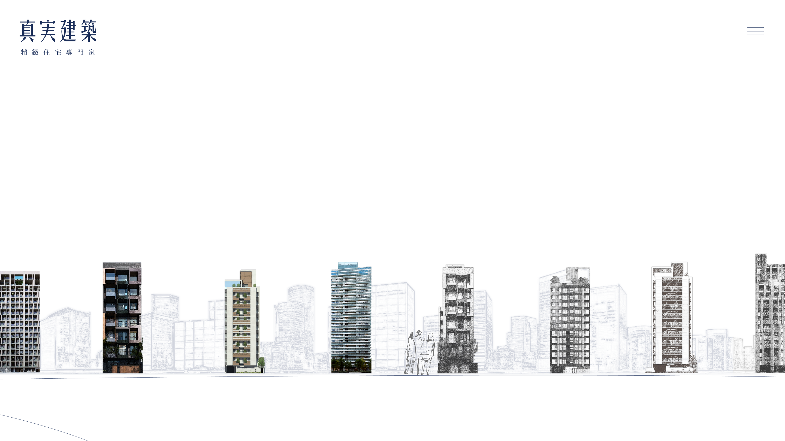
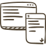

<%- include('./layout/header'); -%>
Web Design / UIUX Design
R
yan Chiang
2 年 UI/UX 設計，有行銷經驗、會前端程式、懂專案管理，喜歡問問題。
參與 20 多件專案，主要負責使用體驗規劃、網站設計及 Prototype 製作。
比起臨機應變更喜歡三思而後行，擅長用既有的資源結合經驗進行創新。
2
設計年資
20+
專案經驗
4
接案經驗
3
跨領域技能
W
orks

真実建築
形象網站設計
call_made
真実建築
形象網站設計
call_made
真実建築
形象網站設計
call_made
真実建築
形象網站設計
call_made
真実建築
形象網站設計
call_made
真実建築
形象網站設計
call_made
更多作品
call_made
E
xperiences
2023-NOW
筑今數位設計｜UIUX設計師
■
系統設計、形象網站、Landing Page及電子錶版等UIUX設計經驗。
■
用試算表結合 App Scripts 製作內部管理系統的原型，並被實際採用。
■
透過內部訪談與專案進度數值化，建立公司標準工作流程與成效指標。

2020-2022
敦煌教育集團｜數位行銷
■
專於成效可視化、數據分析與產品策略發展
■
用少力設計模式，在有限資源下完成部門的數位轉型。
■
以成長行銷概念，提出產品的 UI/UX Redesign 提案。
<%- include('./layout/footer'); -%>